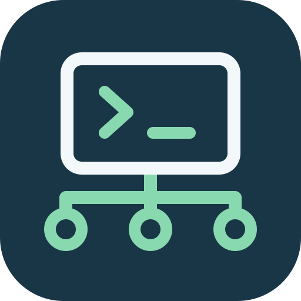

DEVICE DISCOVERY
选择局域网中的设备，开始本次调试。
发现后立即显示，请保持电脑与设备处于同一网络。
填写设备地址，确认后选择此设备。
请输入写号密码。
选择 APK 和目标设备，覆盖安装并保留应用数据，安装成功后自动启动该应用。安装前自动重启本机 ADB 服务。USB 安装请使用数据线连接设备，并开启 USB 调试；网络安装需开启网络调试。
已内置 hw81/hw82 签名资源，可直接选择重签名，无需安装 Java 或配置密钥。原 APK 不会被修改；覆盖安装需与设备已有应用签名一致。
选择本地 ROM 包后，工具会通过网络 ADB 将文件交给播放器现有的原生控制器校验并启动 Recovery 升级。调试工具不直接写分区；升级期间请保持供电和网络连接。
默认使用 hw82；需要旧设备时可切换为 hw81。请复制完整 ROM 文件夹，工具自动选用对应标识文件。新 ROM 不再按 hw81/hw82 限制；刷回旧 ROM 后恢复旧规则。升级前请备份数据。